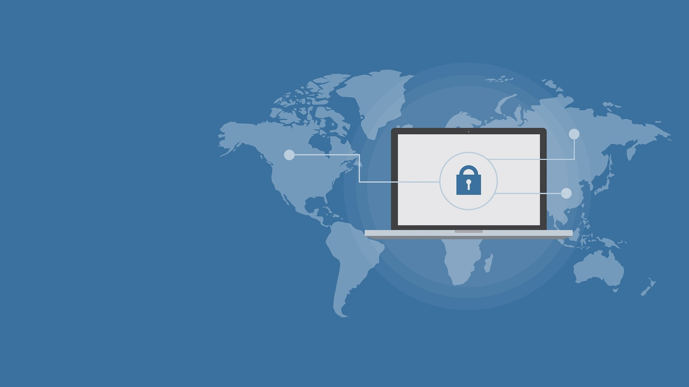

Cybersecurity Tips

Staying safe online does not have to be complicated. A few simple habits can help protect your personal information, accounts, and devices from common cyber threats.
Use Strong Passwords
Strong passwords are one of the easiest ways to protect your online accounts. Avoid using simple passwords that include your name, birthday, or other personal information. Use a different password for each account and consider using a password manager to keep track of them.
Enable Multi-Factor Authentication
Multi-factor authentication adds another layer of security to your accounts. Instead of only entering a password, you may also need to enter a code or approve a sign-in from another device. This can help prevent someone from accessing your account even if they obtain your password.
Watch Out for Phishing
Phishing messages are designed to trick you into sharing personal information or clicking harmful links. Be careful with unexpected emails, text messages, and attachments. Always check the sender and think before clicking a link, especially when a message creates a sense of urgency.
Keep Your Devices Updated
Software updates often include important security fixes that help protect your devices from new threats. Keep your computer, phone, applications, and web browsers updated. Turning on automatic updates can make it easier to stay protected.
Cybersecurity Questions & Feedback
Have a question about online safety or want to share feedback about CyberCleanse? Fill out the form below. This is a demonstration form and does not send information.
Additional Cybersecurity Resources
For more information about protecting yourself online, visit the Cybersecurity and Infrastructure Security Agency (CISA). Their website provides helpful resources and recommendations for improving your online security.